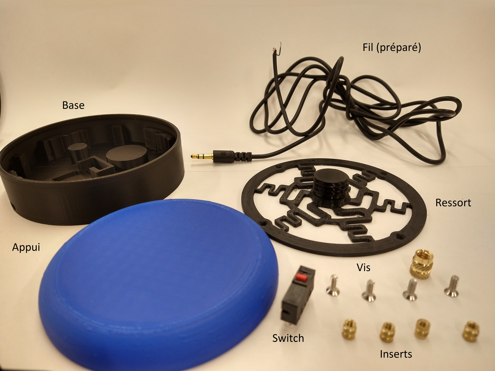

Étape 1
Passer le fil préparé dans le trou situé près de la base. Faire un nœud à l'intérieur. Ce nœud permet d’augmenter la résistance de l'appareil ; si le fil est tiré, le nœud absorbe la force et empêche que la soudure cède.
Ce modèle de switch adaptée a été conçu pour une clientèle d'enfants polyhandicapés, suite à l'expérimentation à long terme avec les modèles commerciaux typiquement disponibles dans un milieu scolaire (e.g. Jelly bean, Big Mack, Spec). Les observations et les retours d'expérience accumulés au fil des années dans divers environnements offrant des services à cette population ont façonné les principes directeurs de son développement. À savoir que cette switch a été développé avant de découvrir que des modèles de switch sont disponibles à plusieurs endroits sur internet, dont sur le site de MakersMakingChange, avec entre autres leur modèle de switch interact qui est définitivement mieux optimisé.
Voici la liste des matériaux en format Excel. Les liens vers Amazon et AliExpress figurent pour les éléments à acheter, car la majorité de ces pièces se trouvent en ligne. Le coût total devrait être de 5 à 7 dollars, bien que certaines pièces soient à acheter en grande quantité (ne se vendant pas à l'unité).
Pour les trois pièces à imprimer, vous trouverez ci-dessous les fichiers et les instructions. 
Passer le fil préparé dans le trou situé près de la base. Faire un nœud à l'intérieur. Ce nœud permet d’augmenter la résistance de l'appareil ; si le fil est tiré, le nœud absorbe la force et empêche que la soudure cède.
Souder le fil à la switch. Utilisez les deux terminaux identifiés par NO (Normally Open) et C (Common) – typiquement numérotés 1 et 3 pour ce modèle. Le fil doit être soudé sur le côté du terminal. Si vous le soudez dessous, la switch ne sera pas correctement pressée contre la base. Il est préférable d'utiliser un fer à souder à température réglable et de régler la température au minimum pour éviter de faire fondre le plastique alentour.
Appliquer une petite quantité de colle chaude au fond de la base (une à deux gouttes suffisent) pour fixer la composante en place. Positionnez la switch de façon à ce que le bouton soit orienté vers la droite (le petit bouton rouge devant arriver au centre de la base). Limiter la quantité de colle facilite d'éventuelles réparations.
Introduire les inserts de cuivre M3 aux emplacements indiqués. Utilisez le fer à souder pour les intégrer fermement à la base.
Laisser reposer pendant cinq minutes afin de permettre au plastique autour des inserts de refroidir. Ensuite, placez le ressort sur la base et fixez les 4 vis dans les trous du ressort en les alignant avec les inserts enfoncés.
Visser l'appui sur le ressort. Appliquez une légère pression afin d'assurer une fixation solide. Une fois cela fait, testez la switch avec un jouet adapté ou un autre appareil dont le bon fonctionnement a été vérifié au préalable.
Le retour le plus fréquent concernant cette switch est qu'elle est trop haute. Il est envisageable de concevoir des modèles plus compacts, mais cela impliquerait d’utiliser des interrupteurs à profil bas – une option que nous étudions. Par ailleurs, l'emploi de colle chaude n'est pas idéal pour la réparabilité. D'autres moyens de fixer la switch tout en préservant la simplicité d'assemblage pourraient être envisagés.